Anechoic Libri2Mix clean test set
| Mixture |
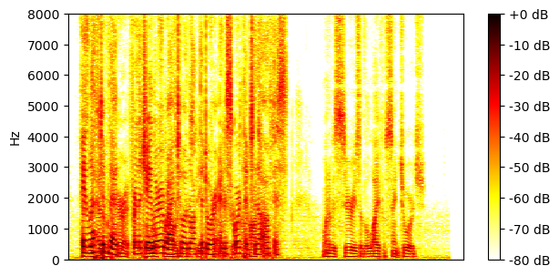
|
|||
|---|---|---|---|---|
| Ground-truth sources |
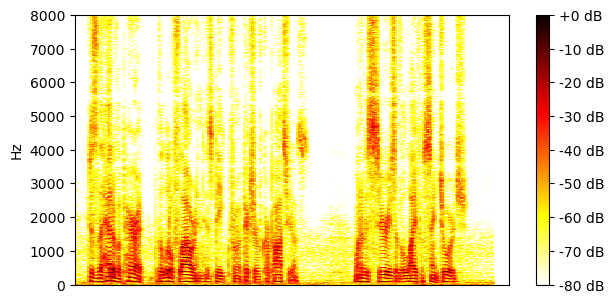
SI-SNR = -5.70 dB |
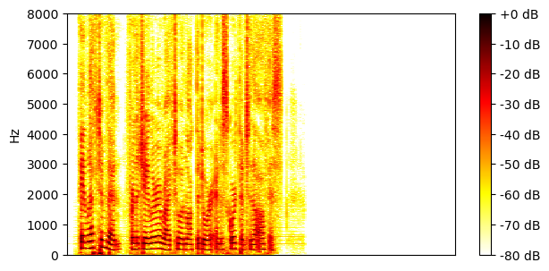
SI-SNR = 6.11 dB |

SI-SNR = -80.70 dB |

SI-SNR = -80.70 dB |
| Method | Separated source 0 | Separated source 1 | Separated source 2 | Separated source 3 |
| Supervised 2-source mixtures |
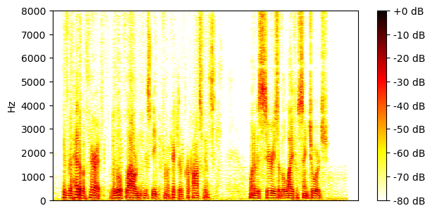
SI-SNR = 11.82 dB |
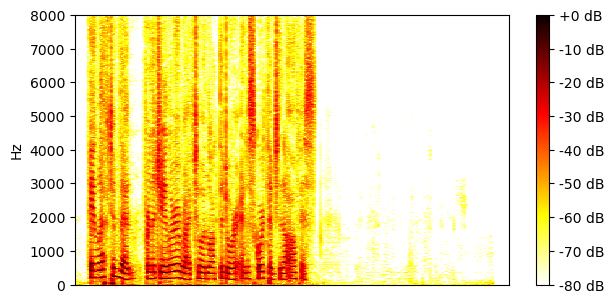
SI-SNR = 17.83 dB |
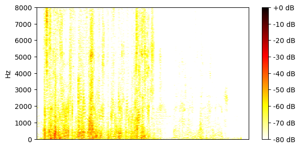
SI-SNR = -49.30 dB |
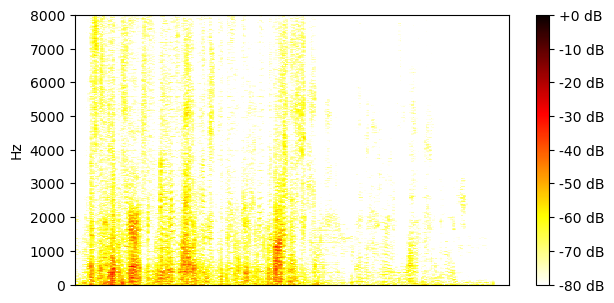
SI-SNR = -51.38 dB |
| Unsupervised 2-source mixtures |
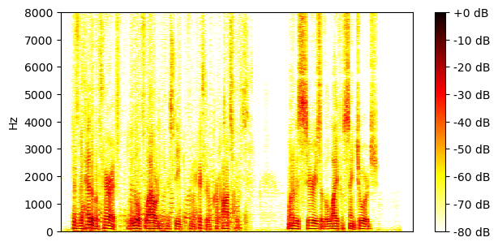
SI-SNR = 10.96 dB |
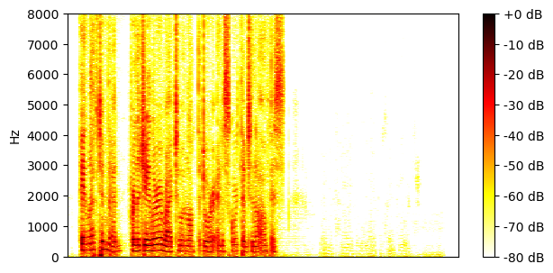
SI-SNR = 5.84 dB |
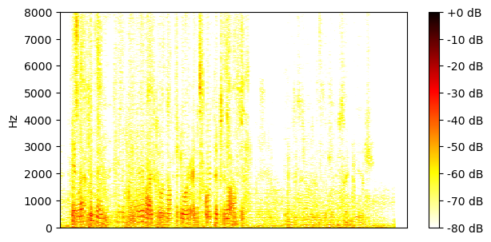
SI-SNR = -54.86 dB |
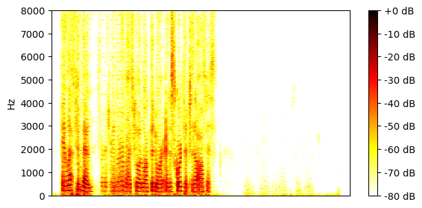
SI-SNR = -74.64 dB |
| Supervised 1-or-2-source mixtures |
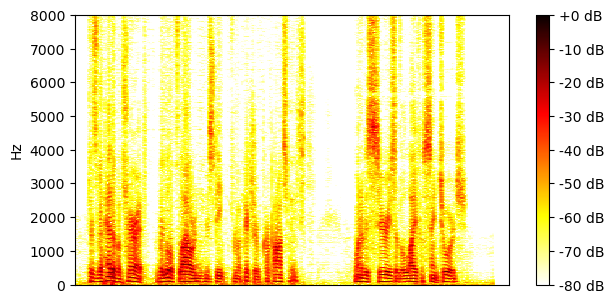
SI-SNR = 12.30 dB |
SI-SNR = 18.41 dB |
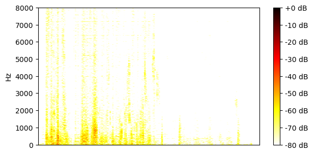
SI-SNR = -42.83 dB |
SI-SNR = -43.11 dB |
| Unsupervised 1-or-2-source mixtures |
SI-SNR = 13.79 dB |
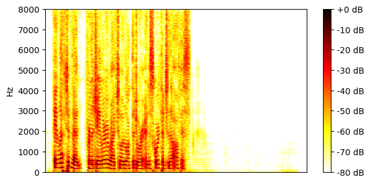
SI-SNR = 19.62 dB |
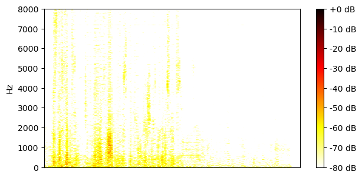
SI-SNR = -42.28 dB |
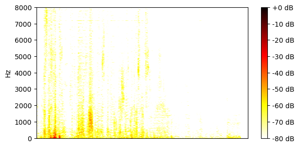
SI-SNR = -47.27 dB |
| Mixture |
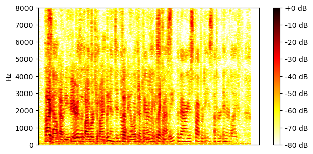
|
|||
|---|---|---|---|---|
| Ground-truth sources |
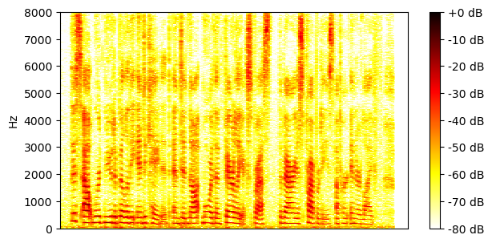
SI-SNR = -6.09 dB |
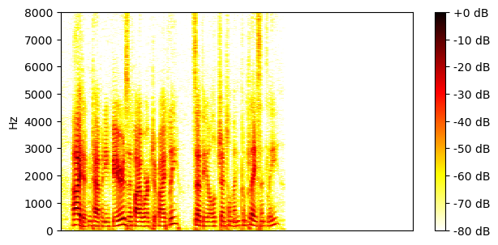
SI-SNR = 5.84 dB |

SI-SNR = -73.45 dB |

SI-SNR = -73.45 dB |
| Method | Separated source 0 | Separated source 1 | Separated source 2 | Separated source 3 |
| Supervised 2-source mixtures |
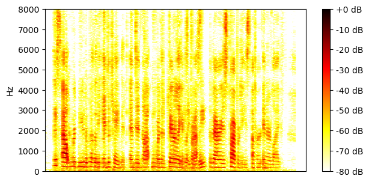
SI-SNR = 5.83 dB |
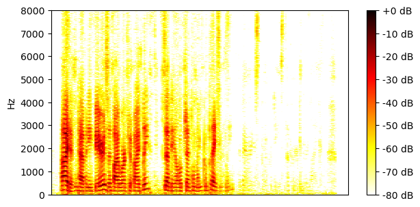
SI-SNR = 15.95 dB |
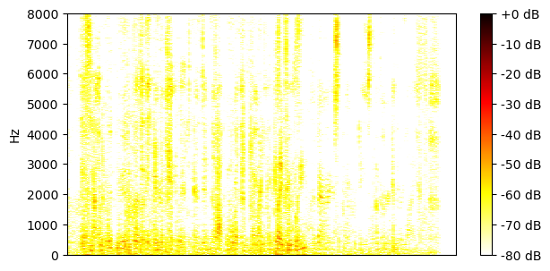
SI-SNR = -42.23 dB |
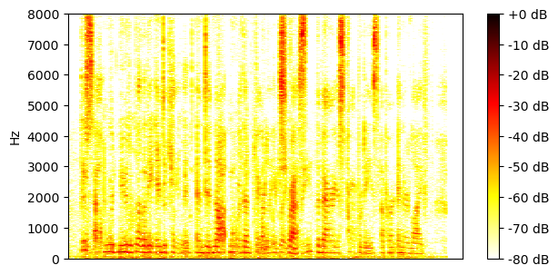
SI-SNR = -58.81 dB |
| Unsupervised 2-source mixtures |
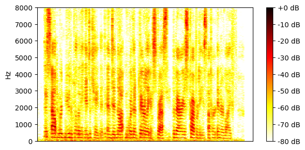
SI-SNR = 9.06 dB |
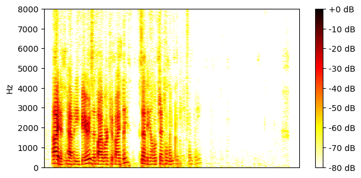
SI-SNR = 11.51 dB |
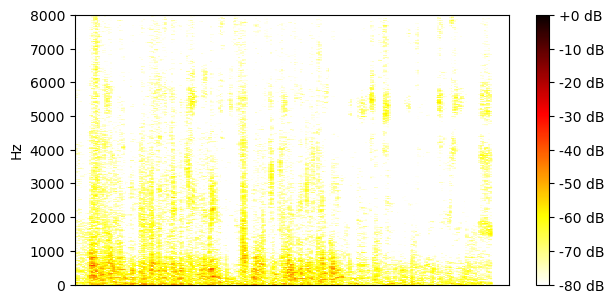
SI-SNR = -42.71 dB |
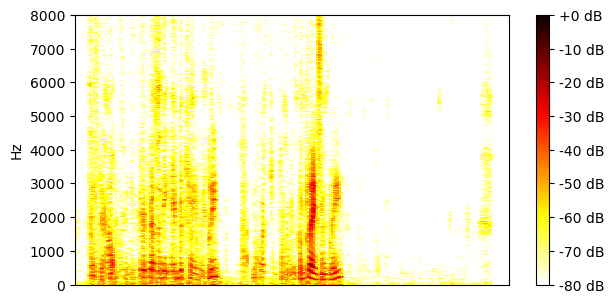
SI-SNR = -60.53 dB |
| Supervised 1-or-2-source mixtures |

SI-SNR = 12.52 dB |
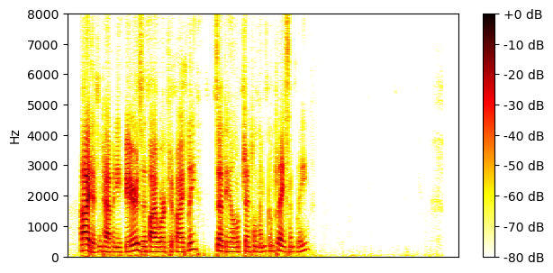
SI-SNR = 18.65 dB |
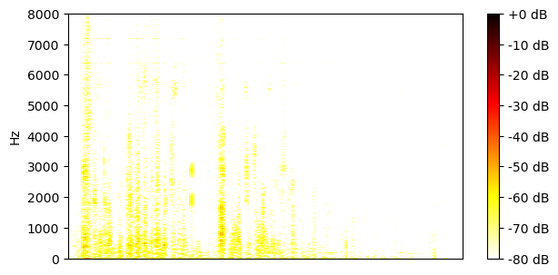
SI-SNR = -34.40 dB |
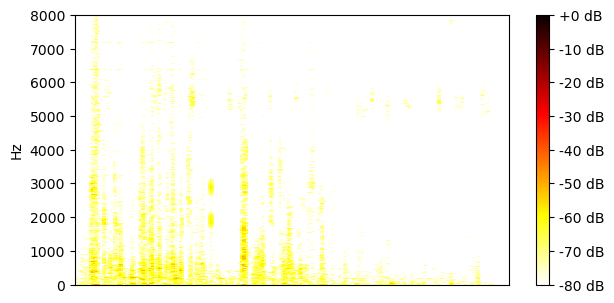
SI-SNR = -35.10 dB |
| Unsupervised 1-or-2-source mixtures |
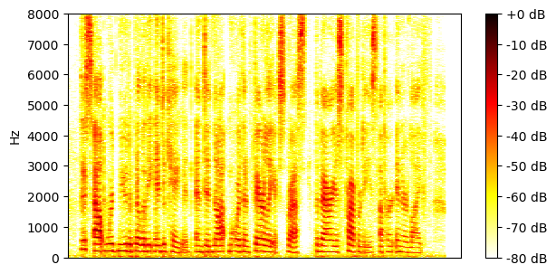
SI-SNR = 13.80 dB |
SI-SNR = 19.88 dB |

SI-SNR = -35.19 dB |
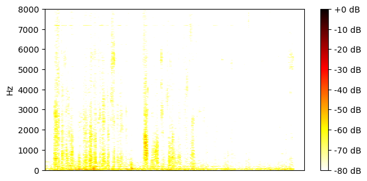
SI-SNR = -37.88 dB |
| Mixture |
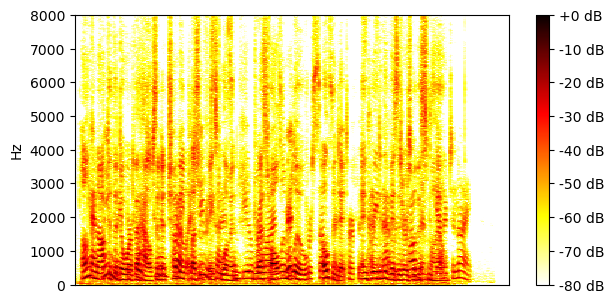
|
|||
|---|---|---|---|---|
| Ground-truth sources |
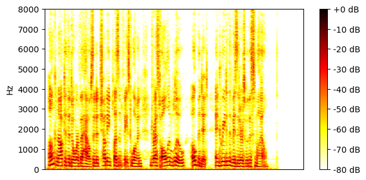
SI-SNR = 5.45 dB |
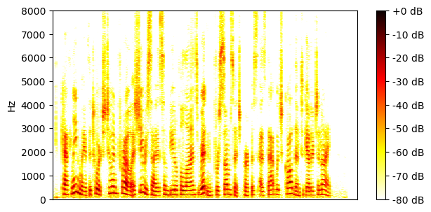
SI-SNR = -5.31 dB |

SI-SNR = -85.03 dB |

SI-SNR = -85.03 dB |
| Method | Separated source 0 | Separated source 1 | Separated source 2 | Separated source 3 |
| Supervised 2-source mixtures |
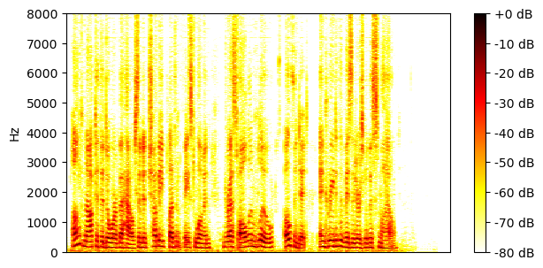
SI-SNR = 18.24 dB |
SI-SNR = 12.75 dB |
SI-SNR = -49.39 dB |
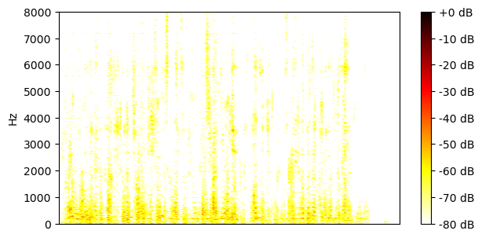
SI-SNR = -49.91 dB |
| Unsupervised 2-source mixtures |
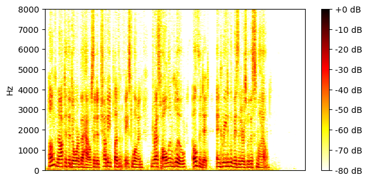
SI-SNR = 19.09 dB |
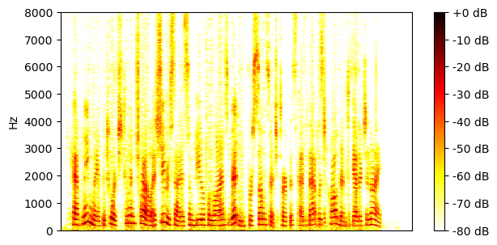
SI-SNR = 13.60 dB |
SI-SNR = -48.59 dB |
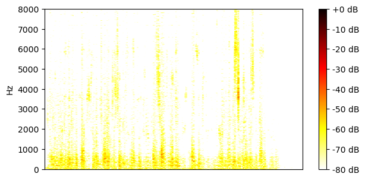
SI-SNR = -49.33 dB |
| Supervised 1-or-2-source mixtures |
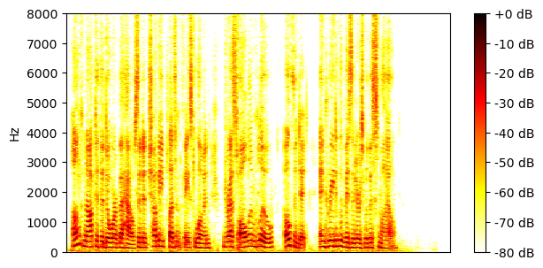
SI-SNR = 19.04 dB |
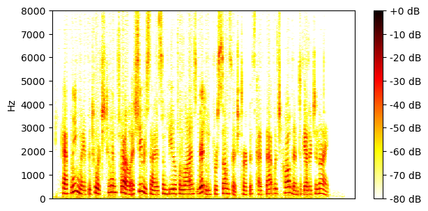
SI-SNR = 13.46 dB |
SI-SNR = -45.96 dB |
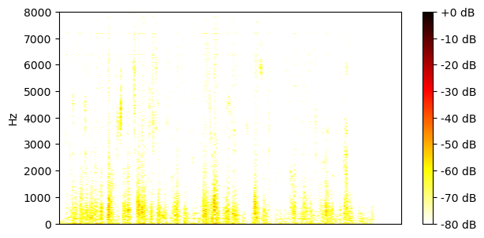
SI-SNR = -46.42 dB |
| Unsupervised 1-or-2-source mixtures |
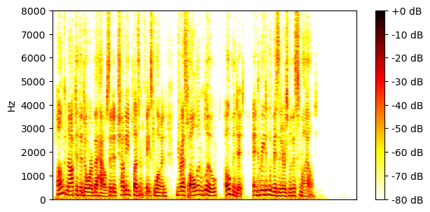
SI-SNR = 20.14 dB |
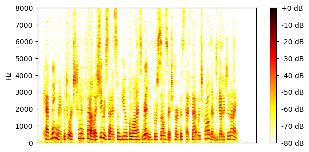
SI-SNR = 14.72 dB |
SI-SNR = -46.00 dB |
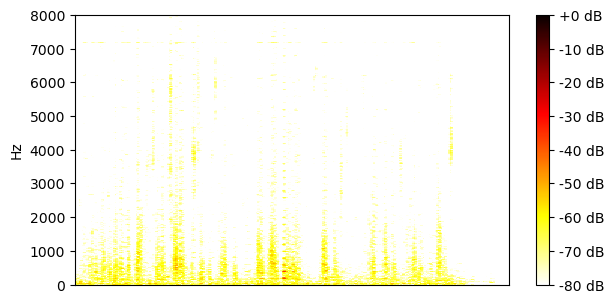
SI-SNR = -47.14 dB |
| Mixture |
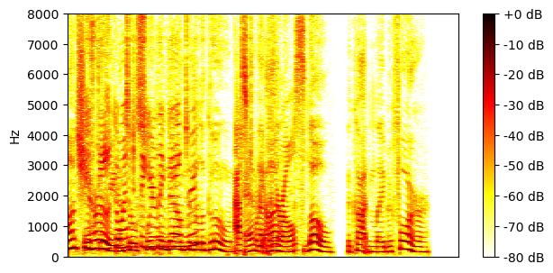
|
|||
|---|---|---|---|---|
| Ground-truth sources |
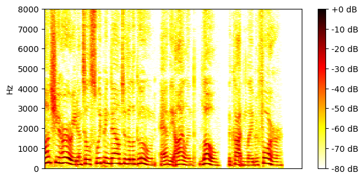
SI-SNR = 5.63 dB |
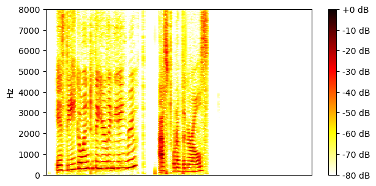
SI-SNR = -5.73 dB |

SI-SNR = -83.95 dB |

SI-SNR = -83.95 dB |
| Method | Separated source 0 | Separated source 1 | Separated source 2 | Separated source 3 |
| Supervised 2-source mixtures |
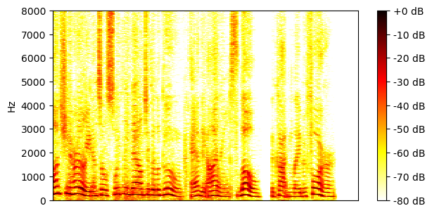
SI-SNR = 16.52 dB |
SI-SNR = 5.49 dB |
SI-SNR = -55.65 dB |
SI-SNR = -70.49 dB |
| Unsupervised 2-source mixtures |
SI-SNR = 9.49 dB |
SI-SNR = 5.73 dB |
SI-SNR = -57.83 dB |
SI-SNR = -74.61 dB |
| Supervised 1-or-2-source mixtures |
SI-SNR = 20.41 dB |
SI-SNR = 14.81 dB |
SI-SNR = -46.37 dB |
SI-SNR = -46.59 dB |
| Unsupervised 1-or-2-source mixtures |
SI-SNR = 17.68 dB |
SI-SNR = 11.57 dB |
SI-SNR = -53.92 dB |
SI-SNR = -54.59 dB |
| Mixture |
|
|||
|---|---|---|---|---|
| Ground-truth sources |
SI-SNR = 2.26 dB |
SI-SNR = -2.16 dB |

SI-SNR = -80.57 dB |

SI-SNR = -80.57 dB |
| Method | Separated source 0 | Separated source 1 | Separated source 2 | Separated source 3 |
| Supervised 2-source mixtures |
SI-SNR = 16.29 dB |
SI-SNR = 14.69 dB |
SI-SNR = -47.41 dB |
SI-SNR = -51.41 dB |
| Unsupervised 2-source mixtures |
SI-SNR = 16.47 dB |
SI-SNR = 15.12 dB |
SI-SNR = -48.21 dB |
SI-SNR = -55.29 dB |
| Supervised 1-or-2-source mixtures |
SI-SNR = 17.94 dB |
SI-SNR = 15.53 dB |
SI-SNR = -42.23 dB |
SI-SNR = -42.67 dB |
| Unsupervised 1-or-2-source mixtures |

SI-SNR = 19.21 dB |
SI-SNR = 16.90 dB |
SI-SNR = -41.52 dB |
SI-SNR = -41.81 dB |